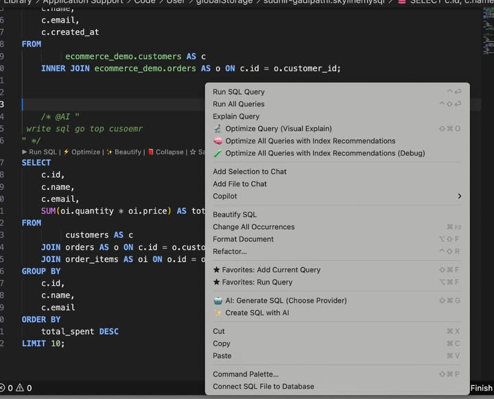

SQL editor & workspace
Write, run and organize SQL with explorer‑bound files, CodeLens, autocomplete, format tools, favorites and result panels.
Overview
The workspace ties an editor tab to a connection, gives every statement a CodeLens row of one‑click actions, and surfaces results in dedicated panels. You can pin queries as SQL Favorites or save them as files under a connection in the tree. For the recommended order of actions, see SQL workspace — action priority.

SQL workspace — action priority
Use this order for day-to-day work in a .sql tab. Higher numbers are for tuning, reuse, or advanced flows — not your first step.
Priority 1 — Write SQL & run a script
Start here: open or create a file, bind the database, write SQL, then run the whole script when you have multiple statements.
| Step | Action | How |
|---|---|---|
| 1a | Open / create a .sql file | New SQL File, tree saved query, or File → New + SQL language. |
| 1b | Bind connection & database | Line 1 CodeLens Switch Database / database @ server, status bar, or Connect SQL File to Database (see per-file context). |
| 1c | Write your SQL | Type, Query builder drags, autocomplete, or SQL with AI. |
| 1d | Run All Queries (full script) | Right‑click → Run All Queries, or ⌘+Shift+↵ / Ctrl+Shift+↵. Each statement runs in order; status in SQL STATUS, rows in Query Results. |
For migration or admin files with many ;-terminated statements, Run All is the main action. Skip Run All when the file contains a DELIMITER block — use Priority 3 instead.
Priority 2 — Run one query
When you are iterating on a single statement, put the caret inside it and run only that block.
| Action | How |
|---|---|
| ▶ Run SQL (CodeLens) | Click above the statement, or F9 / ⌘+↵ / Ctrl+↵. |
| Run SQL Query (menu) | Right‑click → Run SQL Query — same as CodeLens (see editor right‑click). |
| Run from Favorites | SQL FAVORITES panel → double‑click a row or use the panel run control (see SQL Favorites). |
Results open in Query Results; errors and timings in SQL STATUS (panels).
Priority 3 — Write & run PL/SQL / DELIMITER blocks
Stored procedures, functions, and triggers use a custom delimiter so semicolons inside BEGIN … END do not split the script.
| Step | Action | How |
|---|---|---|
| 3a | Write the block | DELIMITER // … CREATE PROCEDURE / FUNCTION / TRIGGER … END // … DELIMITER ; — examples in sample DELIMITER blocks. |
| 3b | ▶ RUN PLSQL Block | CodeLens on the opening DELIMITER <token> line (not on DELIMITER ;). Runs from that line through the matching DELIMITER ;. |
| 3c | Call / test | Run CALL … or a plain SELECT in a separate statement after the block is created. |
Details: DELIMITER & stored‑program blocks.
Other actions (when you need them)
These are important but secondary to write → run script → run one query → PL/SQL.
| Group | Actions | When to use |
|---|---|---|
| Understand performance | Explain Query, ⚡ Optimize / Visual Explain, Optimize All Queries | Slow or complex SELECT / UPDATE / DELETE — Run, EXPLAIN & Optimize, Query Optimizer. |
| AI | 🤖 Generate SQL, Create SQL with AI, Fix SQL Error with AI | Natural-language lines, @ask / @sql / AI: prompts — AI CodeLens, SQL with AI. |
| Reuse snippets | ☆ Save as Favorite, SQL FAVORITES panel insert / manage | Star patterns you run often — SQL Favorites. Save after a query works; run from panel when debugging. |
| Format & fix | ✨ Beautify, 📖 Expand / 📕 Collapse, Quick Fix | Tidy layout or static syntax hints — Format & Beautify, CodeLens. |
| Results grid | Filter, copy, edit row, export | After a SELECT returns rows — Query Results right‑click. |
| Connection & file | Switch Database, Connect SQL File to Database, tree search | Wrong schema, new tab, find a table — Explorer, tree search. |
| Status log | Copy / export / clear | Share error text or clear old runs — SQL Status right‑click. |
Open & create SQL files
SQLLens.AI works on normal .sql files in VS Code. Ways to start a new editor tab:
| How | What happens |
|---|---|
New SQL File (mysql.newSqlFile) | Command Palette → New SQL File, or default ⌘+Alt+N (Windows/Linux: Ctrl+Alt+N). Creates query-001.sql (numbered) in your workspace folder with a short header comment, connection hint, and tips. See keyboard shortcuts. |
| SQLLens.AI sidebar | Use New SQL File from the connection welcome actions when no file is open. |
| Explorer tree | Right‑click a connection or database and choose New SQL File — the new tab is bound to that connection (and database when you picked a schema). |
| VS Code | File → New File, then pick language SQL, or save as .sql. |
| Saved queries | Double‑click a query stored under a connection in the tree to open it as a file tab. |
| AI / history | Generated SQL from SQL with AI can open in a new untitled or saved .sql tab. |
Each tab remembers its own connection and database (see per‑file context). Run with ⌘+↵ / Ctrl+↵ on the statement under the caret, or Run All with ⌘+Shift+↵.
Syntax highlighting
SQLLens.AI registers a MySQL‑aware grammar for .sql files. Colors follow your VS Code theme; optional sqllens.ai Dark / sqllens.ai Light themes tune the editor chrome.
Typical highlighting in the editor:
- Keywords —
SELECT,FROM,WHERE,JOIN,INSERT,CREATE, and other DML/DDL/control words. - Strings — single‑quoted, double‑quoted, and backtick‑quoted identifiers (
`column`). - Comments —
--line,#line (MySQL), and/* … */block comments (often muted). - Numbers — numeric literals and decimals.
- Qualified names —
schema.tableand multi‑part names when spelled out. - Functions — built‑ins such as
COUNT,CONCAT,NOWbefore(.
The header comment on new SQL files (connection hint, tips) uses the comment style so it stays separate from executable SQL.
-- connection hint (comment — not executed)
SELECT emp_no, last_name -- keyword + identifiers
FROM employees.employees AS e -- qualified table + alias
WHERE hire_date > '2000-01-01' -- string literal + comparison
AND last_name LIKE 'K%'; -- pattern matchExplorer & active database
Each connection in the explorer expands into databases, tables, views, routines and triggers. The Active badge marks the database that new statements will run against. Double‑click any other database to switch.
The bar under the tab title shows Switch Database and the active target (for example hr_demo @ 127.0.0.1:3306) — click it to rebind without opening the tree.
Per‑file / Active database context
Every .sql file remembers the connection and database it was last run against. The status bar shows the binding; click it to rebind, or use SQL: Change Active Database in the Command Palette.
Open the same query against staging and production in two tabs — each tab keeps its own connection.
Saved queries in the tree vs SQL Favorites
| Saved queries (tree) | SQL Favorites (panel) | |
|---|---|---|
| Where | Under each connection in the explorer | SQL FAVORITES view next to Query Results, Terminal, etc. |
| Scope | Tied to one server — migrations, admin scripts | Reusable snippets across connections |
| Typical use | Long‑lived files for a project DB | Patterns like SELECT * FROM … LIMIT 100 |
CodeLens overview
CodeLens are the small clickable links that appear above lines in the SQL editor. SQLLens.AI uses them for run/optimize actions on the statement at your caret, database context at the top of the file, and (when enabled) AI helpers.
Turn CodeLens on
- In VS Code / Cursor: Settings → search Code Lens → enable Editor: Code Lens (
editor.codeLens). - To hide only SQLLens.AI lenses: set Disable Sql Code lens (
skyline-mysql.disableSqlCodeLen) totruein Settings, then reload the window.
Which statement gets a row?
Statement CodeLens follow your caret (text cursor). SQLLens.AI parses the file into blocks (split on ; or the active connection delimiter) and shows one link row on the first line of the block that contains the caret.
- Move the caret into a different query to switch which row appears.
- Inside a
CREATE PROCEDURE/TRIGGERbody, lenses usually appear only on the opening line of that routine (not on every inner line). - If the statement is empty or CodeLens is disabled, the row is hidden.
Where links appear
Line 1 of the file — Switch Database and the database @ connection chip (fixed; does not follow the caret).
Above the statement that contains your caret — links appear left → right in this order:
- 🤖 Generate SQL (AI — when the line is a natural-language prompt; see AI CodeLens)
- ▶ Run SQL
- 🤖 Fix SQL Error with AI (after a failed run — see AI CodeLens)
- ⚡ Optimize (only for
SELECT,WITH,UPDATE,DELETE) - ✨ Beautify
- 📖 Expand or 📕 Collapse (layout — when the statement is long enough)
- ❌ Quick Fix or ⚠️ Quick Fix (static syntax hints — when analysis finds issues)
- ☆ Save as Favorite (when the query is not already saved as a favorite)
EXPLAIN is not on the CodeLens row — use the editor right‑click menu or Command Palette (Explain Query).
Top of file — database & connection
On line 1 of every .sql file, SQLLens.AI shows which database this file runs against:
| CodeLens | When it appears | Click action |
|---|---|---|
| Switch Database | File is bound to a connection with a database selected | Opens the database picker for this file (same as Change Active Database). |
| database @ connection (database icon) | Same — shows name and server, e.g. mydb @ Local MySQL | Opens the database picker; tooltip shows connection details. |
| No Database Selected — Click to select | Connected but no schema chosen | Pick a database before running queries. |
| Select Database / Add Connection | No connection bound to the file | Choose an existing connection or add a new one. |
These chips stay at the top while you edit; they do not move with the caret. Per-file binding is described under per-file database context.
Statement row — full reference
| CodeLens | Shortcut | What it does |
|---|---|---|
| ▶ Run SQL | F9 or ⌘+↵ | Runs the statement under the caret against the file’s active database. Results open in Query Results. |
| ⚡ Optimize | ⌘+Shift+O (Optimize from menu) | Opens Query Optimizer / Visual Explain for this statement. Shown only for optimizable statements (SELECT, WITH …, UPDATE, DELETE). |
| ✨ Beautify | — | Formats this statement (indentation and line breaks). Same command as Beautify SQL in the right‑click menu. |
| 📖 Expand | — | Turns a compact single-line statement into multi-line layout (appears when expansion would add lines). |
| 📕 Collapse | — | Collapses a multi-line statement toward a single line (replaces Expand when already expanded). |
| ❌ Quick Fix / ⚠️ Quick Fix | — | Opens SQLLens.AI static analysis for this statement (missing keywords, suspicious patterns, etc.). Red icon = errors; yellow = warnings only. Hidden for very large statements. |
| ☆ Save as Favorite | ⌘+Shift+F | Saves this statement to SQL Favorites. Hidden if the text already matches a saved favorite. |
AI CodeLens
Requires AI to be configured (see SQL with AI). If AI is off, these links do not appear.
| CodeLens | When it appears | What it does |
|---|---|---|
| 🤖 Generate SQL | Caret on a natural-language line (plain English, line ending with ?, or @AI shortcut) | Generates SQL from the prompt and inserts/replaces text. |
| 🤖 Generate SQL (AI Directive) | Block comment /* @AI "…" */ or line @AI "…" | Generates SQL from the directive; on regenerate, only the SQL after the closing */ is replaced. |
| 🔄 Regenerate SQL (AI) | Same as directive, when generated SQL already exists below the block | Re-runs AI using the same prompt. |
| 🤖 Fix SQL Error with AI | After a statement fails on Run (server error) | Appears on the first line of the failed statement; sends the error to AI for a suggested fix. |
When the caret is inside normal SQL (for example mid-SELECT), Generate SQL is hidden so it does not clash with run/optimize links.
Sample AI prompt lines
Put the caret on a prompt line and click 🤖 Generate SQL in CodeLens (or use the right‑click AI commands):
-- @ask: employees in Finance with salary above department average
@sql: list open tickets assigned to me with priority and due date
Which tables reference employees.employee_id?
AI: "create a report query: revenue by region for Q3"Block-comment @AI with generated SQL
Keep the request in a block comment; generated SQL goes after */. Use 🔄 Regenerate SQL (AI) after editing the quoted prompt:
/* @AI "
List active employees in Engineering hired after 2023-01-01.
" */
SELECT e.emp_no, e.first_name, e.last_name
FROM employees e
JOIN dept_emp de ON de.emp_no = e.emp_no AND de.to_date = '9999-01-01'
JOIN departments d ON d.dept_no = de.dept_no
WHERE d.dept_name = 'Engineering' AND e.hire_date > '2023-01-01';DELIMITER & stored‑program blocks
MySQL client scripts often use DELIMITER // … DELIMITER ; around routines. SQLLens.AI detects these blocks so Run sends the whole body, not one line at a time.
▶ RUN PLSQL Block
On each opening DELIMITER <token> line (where the token is not ;), an extra CodeLens appears:
- ▶ RUN PLSQL Block — runs from that
DELIMITERline through the matchingDELIMITER ;, includingCREATE PROCEDURE,CREATE TRIGGER, and similar bodies. - There is no CodeLens on the closing
DELIMITER ;line itself. - Very large files (thousands of lines) may skip delimiter scanning for performance; use normal ▶ Run SQL with the caret inside the block when needed.
DELIMITER //
CREATE PROCEDURE list_dept_headcount(IN p_dept_no CHAR(4))
BEGIN
SELECT d.dept_name, COUNT(*) AS headcount
FROM employees.dept_emp AS de
INNER JOIN employees.departments AS d ON d.dept_no = de.dept_no
WHERE de.dept_no = p_dept_no
AND de.to_date = '9999-01-01'
GROUP BY d.dept_name;
END //
DELIMITER ;Place the caret on the procedure’s opening line or use ▶ RUN PLSQL Block on the DELIMITER // line to execute the entire script (including both DELIMITER lines and the CREATE PROCEDURE body). Semicolons inside BEGIN … END do not split the block.
Format & Beautify
Use the Beautify CodeLens, SQL: Format Query from the Command Palette, or expand/collapse layout commands to tidy multi‑line SQL.
SQL editor — right‑click menu
Right‑click anywhere in a .sql editor tab to open the full context menu. The list below matches the menu top to bottom when the file is in SQL language mode and connected to a database. The same SQLLens.AI actions appear on CodeLens above each statement.

On Windows and Linux, use Ctrl where this page shows ⌘ (Command).
Complete menu reference
| Menu item (in order) | Shortcut (macOS) | What it does |
|---|---|---|
| Run & optimize (SQLLens.AI) | ||
| Run SQL Query | ⌘+↵ or F9 | Executes the statement under the caret against the active connection; results open in Query Results. |
| Run All Queries | ⌘+Shift+↵ or Ctrl+F9 | Runs every statement in the file in order. |
| Explain Query | — | Runs EXPLAIN (or EXPLAIN ANALYZE when supported) for the statement under the caret. |
| Optimize Query (Visual Explain) | ⌘+Shift+O | Opens Query Optimizer with a visual plan for the statement under the caret. |
| Optimize All Queries with Index Recommendations | — | Analyzes every statement in the file and opens a combined optimizer review with index suggestions. |
| Optimize All Queries with Index Recommendations (Debug) | — | Same as above with extra diagnostic detail — intended for troubleshooting; may only appear in some builds. |
| Chat & Copilot (VS Code / Cursor — when installed) | ||
| Add Selection to Chat | — | Sends the highlighted SQL to the editor’s AI chat panel. |
| Add File to Chat | — | Sends the entire .sql file to chat. |
| Copilot | — | Submenu for GitHub Copilot (inline chat, explain, and related actions). Shown only if the Copilot extension is enabled. |
| Format & refactor | ||
| Beautify SQL | — | Formats the statement under the caret (SQLLens.AI — same as the Beautify CodeLens). See Format & Beautify. |
| Change All Occurrences | ⌘+F2 | VS Code: rename all matches of the selected symbol in the file. |
| Format Document | ⌥+Shift+F | VS Code: format the whole document using the active formatter (may differ from SQLLens.AI Beautify). |
| Refactor… | ⌃+Shift+R | VS Code: refactor menu (extract, rename symbol, and other language refactorings when available). |
| Favorites (SQLLens.AI) | ||
| ★ Favorites: Add Current Query | ⌘+Shift+F | Saves the statement under the caret to SQL Favorites. |
| ★ Favorites: Run Query | ⌘+Alt+F | Pick a saved favorite and run it immediately. |
| AI (SQLLens.AI) | ||
| 🤖 AI: Generate SQL (Choose Provider) | ⌘+Shift+G | Generate SQL from the current line or selection using your configured provider — see SQL with AI. |
| ✨ Create SQL with AI | — | Opens the guided flow to create or extend SQL in the editor with AI. |
| Clipboard (VS Code) | ||
| Cut | ⌘+X | Cut selection to clipboard. |
| Copy | ⌘+C | Copy selection to clipboard. |
| Paste | ⌘+V | Paste from clipboard. |
| Other | ||
| Command Palette… | ⌘+Shift+P | Opens all VS Code commands — search SQLLens.AI or MySQL for extension actions not on this menu. |
| Connect SQL File to Database | — | Binds this .sql file to a connection and database (aligns with the status bar / Change Active Database). |
Items that appear in other cases
- Set as SQL File — shown at the top when the document is not in SQL language mode (for example a plain-text file). Switches the editor to SQL so Run, CodeLens, and autocomplete work.
- Chat / Copilot rows — depend on which AI extensions you have installed (Cursor, GitHub Copilot, etc.). If you do not see them, use SQLLens.AI AI entries above or SQL with AI.
For a printable shortcut list, open SQLLens.AI: Show Keyboard Shortcuts from the Command Palette (⌘+Shift+P) or see keyboard shortcuts.
Query Results — right‑click menu
After you Run a query, right‑click a cell or row in the QUERY RESULTS grid (see result panels). Menus are context‑sensitive: edit actions require a result set that allows editing (for example a single-table SELECT).
Filter & copy
- Filter by
column = 'value'— adds aWHEREfilter using the clicked cell and re-runs (handy for drilling into one value). - Copy → Cell Value — copies the cell to the clipboard.
- Copy → Row (Tab) — tab-separated row values.
- Copy → Row as INSERT / Row as UPDATE — SQL statements for that row.
- Copy → All Rows — Tab, CSV, JSON, or SQL for the full result set.
Edit rows (when enabled)
- Edit → Open Edit Dialog — form editor for the row.
- Edit → Set NULL / Set Empty String / Set to Default — quick cell edits in the grid.
- Insert New Row / Duplicate Row / Delete Row — row CRUD when the grid is editable.
Export, refresh & appearance
- Export — Excel (
.xlsx), CSV, JSON, or SQL (INSERT) for all rows in the result. - Refresh — re-runs the query that produced the grid.
- Appearance → Header Border Color — Blue, Green, Red, Purple, Orange, Yellow, Rainbow gradient, or reset to default.
- Appearance → Row Background Color — Default (transparent), light blue/green/yellow/purple/pink/orange tints, or reset to default. These only change how the grid looks in your session.
SQL Status — right‑click menu
Right‑click in the SQL STATUS panel (query log, errors, timings) for:
- Copy Selection — copies highlighted text in the panel.
- Copy All — copies the full log content.
- Export to Text… / Export to CSV… — saves the log to a file.
- Clear All — empties the status panel.
Individual error rows may also offer inline actions (for example copy SQL, search the error on the web, or ask AI for help) from buttons on the row — separate from this panel menu.
Autocomplete (IntelliSense)
While you type in a .sql file connected to MySQL/MariaDB, SQLLens.AI adds schema‑aware suggestions on top of VS Code’s editor. For the full reference — @com / @dba channels, screenshots, JOIN ON lines, favorites, and keyboard shortcuts — see SQL autocomplete.
How to open the list
- Implicit — keep typing; suggestions appear when VS Code’s Quick Suggestions are on.
- Explicit — Ctrl+Space (macOS may use ⌃+Space or ⌘+Space depending on your keymap).
- Filtering — more characters narrow the list; labels show whether a row is a table, column, favorite, diagnostic template, or keyword.
- Snippets — some rows insert multi‑line SQL; use Tab to jump placeholders like any VS Code snippet.
Inside --, #, or /* */ comments, SQLLens.AI does not offer completions (string and backtick literals are respected).
What you get
| Kind | Examples |
|---|---|
| Schema | Databases, tables, views, columns, routines — from the active connection |
| JOIN helpers | After JOIN, suggested ON lines using foreign‑key metadata; warns when no relationship is found |
| Table aliases | AS alias suggestions after FROM / JOIN |
| Favorites & recent | Starred queries and frequently run SQL float toward the top when labels match |
| Diagnostics & library | Curated health/performance templates and a large MySQL command catalog |
| Query Builder hints | Shortcut tokens (s, LJ, …) that pair with tree drags — accepting text alone does not run the full builder drop |
For drag‑and‑drop statement assembly, see Query builder; autocomplete and the builder share vocabulary but different gestures.
Example: after SELECT from a table, invoke suggestions (Ctrl+Space) to pick columns; after INNER JOIN employees.departments AS d ON accept a suggested ON line from foreign-key metadata:
SELECT e.emp_no, e.last_name, d.dept_name
FROM employees.employees AS e
INNER JOIN employees.dept_emp AS de ON de.emp_no = e.emp_no
INNER JOIN employees.departments AS d ON d.dept_no = de.dept_no
WHERE e.hire_date > '1990-01-01';More copy-paste examples: Sample queries.
SQL Favorites
The SQL FAVORITES panel lists snippets you star for quick reuse. Open it from the bottom/side panel tabs (same row as QUERY RESULTS). For overall workflow order, see action priority — favorites are for reuse after you have working SQL (Priority 2 run, or save from Priority 1).
Favorites panel — suggested order
- Run — double‑click a favorite or use the panel run action when you already trust the snippet (same as Priority 2).
- Insert — click a row to paste into the editor, then edit and ▶ Run SQL.
- Save / manage — star from CodeLens ☆ Save as Favorite or add from the panel; rename, folder, delete via Manage.
Save a favorite
- Click Favorite on the CodeLens row above a statement, or run ★ Favorites: Add Current Query (
mysql.favorite.add) from the Command Palette. - Give the snippet a name and optional shortcuts — favorites can also appear in the completion list when you type the name prefix.
Insert or run a favorite
- Panel — expand a folder, click a row to insert, or use run actions from the panel toolbar.
- Drag — drag a favorite into the editor to insert at the drop position.
- Autocomplete — type the favorite name or shortcut at the start of a line (or after
;); pick the row marked as a user favorite to expand the full SQL. - Keyboard — ★ Favorites: Insert Query (
mysql.favorite.insert): default ⌘+K then F (see shortcuts). - Manage — ★ Favorites: Manage renames, folders, and deletes without leaving VS Code.
Example snippet worth starring (safe read-only pattern):
SELECT emp_no, first_name, last_name, hire_date
FROM employees.employees
ORDER BY hire_date DESC
LIMIT 100;Run, EXPLAIN & Optimize
Use CodeLens or the right‑click menu to work with the statement at your caret:
- ▶ Run SQL (CodeLens) or Run SQL Query (menu) — executes one statement; rows appear in Query Results (see panels below).
- Run All Queries — menu or shortcut only; runs every statement in the file in order.
- Explain Query — right‑click or Command Palette; sends
EXPLAINorEXPLAIN ANALYZEwhen supported. - ⚡ Optimize (CodeLens) or Optimize Query (Visual Explain) (menu) — opens the Query Optimizer workbench with Visual Explain and index suggestions.
Place the caret inside this statement, then use ▶ Run SQL, Explain Query, or ⚡ Optimize:
SELECT
e.emp_no,
e.first_name,
e.last_name,
d.dept_name
FROM employees.employees AS e
INNER JOIN employees.dept_emp AS de
ON de.emp_no = e.emp_no AND de.to_date = '9999-01-01'
INNER JOIN employees.departments AS d ON d.dept_no = de.dept_no
WHERE e.last_name LIKE 'K%'
ORDER BY d.dept_name, e.last_name
LIMIT 50;

Query Results, SQL Status & side panels
Result sets appear in the Query Results view (grid or tab per skyline-mysql.resultDisplayMode). Status messages, notices and client errors show in the SQL / MySQL output channel. Pin panels next to the editor when you want results visible while editing the next statement.
Use the panel’s toolbar to export CSV, tune column layout, or re-run without leaving the dock.
Tree search
Use the filter at the top of the explorer to fuzzy‑find a table, view or routine across all databases on the connection.
Sample queries
These examples use the public employees sample schema (MySQL employees database). Adjust schema/table names if your server uses a different database name. Pair with Query builder drags or SQL with AI to build variants faster.
Connection probe
Run after connecting to confirm the database is reachable:
SELECT 1;
SELECT COUNT(*) AS employee_rows
FROM employees.employees;Simple SELECT
List ten employees with name and hire date — use ▶ Run SQL on this block:
SELECT
emp_no,
first_name,
last_name,
hire_date
FROM employees.employees
ORDER BY hire_date DESC
LIMIT 10;Joins (department per employee)
Current assignment uses to_date = '9999-01-01' in the sample data. Good for ⚡ Optimize and JOIN autocomplete demos:
SELECT
e.emp_no,
e.first_name,
e.last_name,
d.dept_name
FROM employees.employees AS e
INNER JOIN employees.dept_emp AS de
ON de.emp_no = e.emp_no AND de.to_date = '9999-01-01'
INNER JOIN employees.departments AS d ON d.dept_no = de.dept_no
WHERE e.last_name LIKE 'K%'
ORDER BY d.dept_name, e.last_name
LIMIT 50;Average salary by department
SELECT
d.dept_name,
ROUND(AVG(s.salary), 2) AS avg_salary
FROM employees.salaries AS s
INNER JOIN employees.employees AS e ON e.emp_no = s.emp_no
INNER JOIN employees.dept_emp AS de
ON de.emp_no = e.emp_no AND de.to_date = '9999-01-01'
INNER JOIN employees.departments AS d ON d.dept_no = de.dept_no
WHERE s.to_date = '9999-01-01'
GROUP BY d.dept_name
ORDER BY avg_salary DESC;Subquery (salary above company average)
SELECT
e.first_name,
e.last_name,
s.salary
FROM employees.employees AS e
INNER JOIN employees.salaries AS s
ON s.emp_no = e.emp_no AND s.to_date = '9999-01-01'
WHERE s.salary > (
SELECT AVG(s2.salary)
FROM employees.salaries AS s2
WHERE s2.to_date = '9999-01-01'
)
ORDER BY s.salary DESC
LIMIT 25;CTE (salary above department average)
WITH dept_avg AS (
SELECT
de.dept_no,
ROUND(AVG(s.salary), 2) AS avg_salary
FROM employees.salaries AS s
INNER JOIN employees.employees AS e ON e.emp_no = s.emp_no
INNER JOIN employees.dept_emp AS de
ON de.emp_no = e.emp_no AND de.to_date = '9999-01-01'
WHERE s.to_date = '9999-01-01'
GROUP BY de.dept_no
)
SELECT
e.emp_no,
e.first_name,
e.last_name,
d.dept_name,
s.salary,
da.avg_salary
FROM employees.employees AS e
INNER JOIN employees.salaries AS s
ON s.emp_no = e.emp_no AND s.to_date = '9999-01-01'
INNER JOIN employees.dept_emp AS de
ON de.emp_no = e.emp_no AND de.to_date = '9999-01-01'
INNER JOIN employees.departments AS d ON d.dept_no = de.dept_no
INNER JOIN dept_avg AS da ON da.dept_no = de.dept_no
WHERE s.salary > da.avg_salary
ORDER BY s.salary DESC
LIMIT 40;DML patterns (review before run)
Use on a sandbox database only. Type ins / u / del before dragging tables in the Query builder, or paste these templates:
INSERT
INSERT INTO employees.departments (dept_no, dept_name)
VALUES ('d010', 'AI Research');UPDATE
UPDATE employees.employees
SET first_name = 'Ann'
WHERE emp_no = 10001;DELETE
DELETE FROM employees.departments
WHERE dept_no = 'd010';DELIMITER blocks (procedures, functions, triggers)
MySQL client tools change the statement terminator so semicolons inside BEGIN … END are allowed. SQLLens.AI treats everything from an opening DELIMITER <token> through DELIMITER ; as one unit. Use ▶ RUN PLSQL Block on the opening DELIMITER line (see DELIMITER & stored‑program blocks).
Stored procedure (// token)
DELIMITER //
DROP PROCEDURE IF EXISTS list_dept_headcount //
CREATE PROCEDURE list_dept_headcount(IN p_dept_no CHAR(4))
BEGIN
SELECT d.dept_name, COUNT(*) AS headcount
FROM employees.dept_emp AS de
INNER JOIN employees.departments AS d ON d.dept_no = de.dept_no
WHERE de.dept_no = p_dept_no
AND de.to_date = '9999-01-01'
GROUP BY d.dept_name;
END //
DELIMITER ;
-- Run separately after the block is created:
CALL list_dept_headcount('d001');Function ($$ token)
DELIMITER $$
DROP FUNCTION IF EXISTS current_title$$
CREATE FUNCTION current_title(p_emp_no INT)
RETURNS VARCHAR(50)
READS SQL DATA
BEGIN
DECLARE v_title VARCHAR(50);
SELECT t.title INTO v_title
FROM employees.titles AS t
WHERE t.emp_no = p_emp_no
AND t.to_date = '9999-01-01'
ORDER BY t.from_date DESC
LIMIT 1;
RETURN v_title;
END$$
DELIMITER ;
SELECT emp_no, current_title(10001) AS title FROM employees.employees LIMIT 5;Trigger ($$ token)
Use on a sandbox table only — adjust the table name if needed:
DELIMITER $$
DROP TRIGGER IF EXISTS employees.trg_employees_trim_name$$
CREATE TRIGGER trg_employees_trim_name
BEFORE UPDATE ON employees.employees
FOR EACH ROW
BEGIN
SET NEW.last_name = TRIM(NEW.last_name);
SET NEW.first_name = TRIM(NEW.first_name);
END$$
DELIMITER ;Mixed file: plain SQL + DELIMITER block
Regular statements end with ;. The routine block keeps inner semicolons — do not rely on Run All for the whole file when a DELIMITER section is present; run the probe query, then ▶ RUN PLSQL Block on the opening DELIMITER line, then CALL:
SELECT COUNT(*) AS employee_rows FROM employees.employees;
DELIMITER //
CREATE PROCEDURE list_dept_headcount(IN p_dept_no CHAR(4))
BEGIN
SELECT d.dept_name, COUNT(*) AS headcount
FROM employees.dept_emp AS de
INNER JOIN employees.departments AS d ON d.dept_no = de.dept_no
WHERE de.dept_no = p_dept_no AND de.to_date = '9999-01-01'
GROUP BY d.dept_name;
END //
DELIMITER ;
CALL list_dept_headcount('d005');Multiple statements in one file
Use Run All Queries (⌘+Shift+↵) to execute each statement in order; status for each appears in SQL STATUS:
SELECT COUNT(*) AS n FROM employees.employees;
SELECT COUNT(*) AS n FROM employees.departments;
SELECT COUNT(*) AS n FROM employees.salaries WHERE to_date = '9999-01-01';EXISTS (engineers with a current title)
SELECT e.emp_no, e.first_name, e.last_name
FROM employees.employees AS e
WHERE EXISTS (
SELECT 1
FROM employees.titles AS t
WHERE t.emp_no = e.emp_no
AND t.to_date = '9999-01-01'
AND t.title LIKE '%Engineer%'
)
ORDER BY e.emp_no
LIMIT 50;Related
- Query builder
- LLMs & AI
- Settings reference
- Schema & database objects
- Data import, export & schema tools